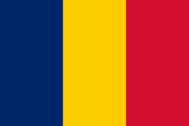
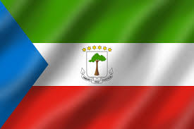

Day 6: Exploring Central Africa
Introduction to Central Africa
Central Africa is known for its dense rainforests, diverse wildlife, and vibrant cultures. It's home to many unique animals like gorillas and elephants.
How Many Countries in Central Africa?
There are 9 countries in Central Africa. Some of them include the Democratic Republic of the Congo, Cameroon, and Gabon.
What is the Biggest Country in Central Africa?
The Democratic Republic of the Congo is the largest country in Central Africa, known for its vast rainforests and mineral resources.
Main Touristic Areas in Central Africa
- Virunga National Park (DR Congo): Famous for mountain gorillas.

Mountain gorillas in Virunga National Park, DR Congo.
- Lobéké National Park (Cameroon): Known for diverse wildlife.
Lobéké National Park, Cameroon, a haven for wildlife.
- Odzala-Kokoua National Park (Republic of Congo): Offers gorilla and forest elephant sightings.

A glimpse of the dense forests of Odzala-Kokoua, Republic of Congo.
- Dzanga-Sangha Reserve (Central African Republic): Rich in biodiversity and home to forest elephants.

Forest elephants in Dzanga-Sangha Reserve, Central African Republic.

The vast and dense rainforests of the Democratic Republic of the Congo.
The Democratic Republic of the Congo is home to the Congo Rainforest, the second-largest tropical forest in the world, known for its incredible biodiversity.
Mount Cameroon, an active volcano and the highest point in West and Central Africa.
Cameroon is often referred to as "Africa in miniature" because it features all major climates and vegetation types of the continent.
The Congo River flowing through Brazzaville, the capital of the Republic of Congo.
The Republic of Congo is known for the Congo River, the second-longest river in Africa, which is crucial for transportation and local livelihoods.

Manovo-Gounda St Floris National Park, a UNESCO World Heritage site in the Central African Republic.
The Central African Republic is rich in wildlife and protected areas, with national parks like Manovo-Gounda St Floris being critical for conservation.

Lake Chad, a vital water source for millions of people in the region.
Chad is home to Lake Chad, which supports over 30 million people in four countries and is an essential source of water in a largely arid region.
The beautiful landscapes of Bioko Island, Equatorial Guinea.
Equatorial Guinea's Bioko Island is known for its stunning beaches, volcanic landscapes, and rich biodiversity, including endangered primates.

Loango National Park, often called "Africa's Last Eden" in Gabon.
Gabon is famous for its national parks, which cover almost 11% of the country, with Loango National Park being one of the most pristine and biodiverse areas.

São Tomé Island, the larger of the two islands making up São Tomé and Príncipe.
São Tomé and Príncipe are known for their stunning natural beauty, including lush rainforests, volcanic landscapes, and unique wildlife.
Kalandula Waterfalls, one of the largest and most spectacular waterfalls in Angola.
Angola is known for its dramatic landscapes, including the Kalandula Waterfalls, one of the largest waterfalls in Africa, and a major natural attraction.
Countries, Their Flags, and Capital Cities in Central Africa
| Country | Flag | Capital City |
|---|---|---|
| Democratic Republic of the Congo |  |
Kinshasa |
| Cameroon |  |
Yaoundé |
| Republic of Congo | Brazzaville | |
| Central African Republic |  |
Bangui |
| Chad |  | N'Djamena |
| Equatorial Guinea |  | Malabo |
| Gabon |  |
Libreville |
| São Tomé and Príncipe |  |
São Tomé |
| Angola |  |
Luanda |
Culture and Languages
Central Africa has a rich cultural heritage with many ethnic groups speaking various languages. French is commonly spoken, along with local languages like Lingala and Kikongo.